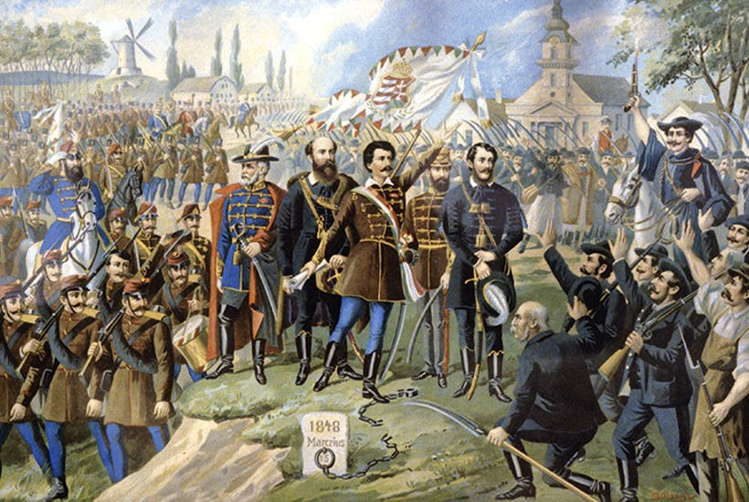

Austria-Hungary, often referred to as the Austro-Hungarian Empire or the Dual Monarchy, was a constitutional monarchy and great power in Central Europe between 1867 and 1918. It was formed with the Austro-Hungarian Compromise of 1867, and was dissolved following its defeat in the First World War.
The union was established by the Austro-Hungarian Compromise on 30 March 1867 in the aftermath of the Austro-Prussian War. It consisted of two monarchies (Austria and Hungary), and one autonomous region: the Kingdom of Croatia-Slavonia under the Hungarian crown, which negotiated the Croatian–Hungarian Settlement in 1868. It was ruled by the House of Habsburg, and constituted the last phase in the constitutional evolution of the Habsburg Monarchy. Following the 1867 reforms, the Austrian and Hungarian states were co-equal in power. Foreign and military affairs came under joint oversight, but all other governmental faculties were divided between respective states.
Austria-Hungary was a multinational state and one of Europe's major powers at the time. Austria-Hungary was geographically the second-largest country in Europe after the Russian Empire, at 621,538 km2 (239,977 sq mi), and the third-most populous (after Russia and the German Empire). The Empire built up the fourth-largest machine building industry of the world, after the United States, Germany, and the United Kingdom. Austria-Hungary also became the world's third largest manufacturer and exporter of electric home appliances, electric industrial appliances and power generation apparatus for power plants, after the United States and the German Empire.
After 1878, Bosnia and Herzegovina came under Austro-Hungarian military and civilian rule until it was fully annexed in 1908, provoking the Bosnian crisis among the other powers. The northern part of the Ottoman Sanjak of Novi Pazar was also under de facto joint occupation during that period but the Austro-Hungarian army withdrew as part of their annexation of Bosnia. The annexation of Bosnia also led to Islam being recognized as an official state religion due to Bosnia's Muslim population.
Austria-Hungary was one of the Central Powers in World War I, which began with an Austro-Hungarian war declaration on the Kingdom of Serbia on 28 July 1914. It was already effectively dissolved by the time the military authorities signed the armistice of Villa Giusti on 3 November 1918. The Kingdom of Hungary and the First Austrian Republic were treated as its successors de jure, whereas the independence of the West Slavs and South Slavs of the Empire as the First Czechoslovak Republic, the Second Polish Republic and the Kingdom of Yugoslavia, respectively, and most of the territorial demands of the Kingdom of Romania were also recognized by the victorious powers in 1920.

The organization of the administrative system in the Austrian Empire was complicated by the fact that between the State and the purely local communal administration there intruded yet a third element, grounded in history, the territories (Länder). The State administration comprised all affairs having relation to rights, duties and interests "which are common to all territories"; all other administrative tasks were left to the territories. Finally, the communes had self-government within their own sphere.
To this division of the work of administration corresponded a three-fold organization of the authorities: State, territorial and communal. The State authorities were divided on geographical lines into central, intermediate and local, and side by side with this there was a division of the offices for the transaction of business according to the various branches of the administration. The central authorities, which as early as the 18th century worked together in a common mother cell of the State chancery, became differentiated so soon as the growing tasks of administration called for specialization; in 1869 there were seven departments, and in the concluding decade of the Austrian Empire there were set up Ministries of Labour, Food, Public Health and Social Care. Under these ministries came the Statthalter, whose administrative area had ordinarily the proportions of a Crown territory (Kronland); but the immense variations in area of the Crown territories made a uniform and consistent intermediate administrative organization practically impossible. The lowest administrative unit was the political sub-district (Bezirk) under an official (Bezirkshauptmann), who united nearly all the administrative functions which were divided among the various ministries according to their attributions.
Side by side with the State administration certain Crown territory administrations also existed in the 17 Crown territories, carried on by selected honorary officials, having under them a staff of professional officials. Many branches of the territorial administration had great similarities with those of the State, so that their spheres of activity frequently overlapped and came into collision. This administrative "double track", as it was called, led, it is true, in many cases to lively emulation, but was on the whole highly extravagant. The evils of this complicated system are obvious, and easy to condemn. They can be explained, partly by the origin of the State – for the most part through a voluntary union of countries possessed by a strong sense of their own individuality – partly by the influence in Austria of the Germanic spirit, well understood by the Slavs, which has nothing of the Latin tendency to reduce all questions of administration to clear-cut formulae as part of a logically consistent system. Like the English administrative system, the Austrian presented a rich variety, a variety indeed so rich that it clamoured for drastic reform.
Bienerth's last act as premier in May 1911 was the appointment of a commission nominated by the Emperor, to draw up a scheme of administrative reform. So early as 1904 Korber had declared a complete change in the principles of administration to be essential if the machinery of State were to continue working. After seven years of inaction, however, this imperial rescript was pitched in a far lower key. The continuous progress of society, it said, had made increased demands on the administration, that is to say, it was assumed that reform was not demanded so much by the defects of the administration but by the progress of the times, not because the administration was bad, but because life was better. It was an attempt to reform the administration without first reforming the State on equivalent lines.
The traditional aristocracy and land-based gentry class gradually faced increasingly wealthy men of the cities, who achieved wealth through trade and industrialization. The urban middle and upper class tended to seek their own power and supported progressive movements in the aftermath of revolutions in Europe.
As in the German Empire, the Austro-Hungarian Empire frequently used liberal economic policies and practices. From the 1860s, businessmen succeeded in industrializing parts of the Empire. Newly prosperous members of the bourgeoisie erected large homes, and began to take prominent roles in urban life that rivaled the aristocracy's. In the early period, they encouraged the government to seek foreign investment to build up infrastructure, such as railroads, in aid of industrialization, transportation and communications, and development.
The influence of liberals in Austria, most of them ethnic Germans, weakened under the leadership of Count Eduard von Taaffe, the Austrian prime minister from 1879 to 1893. Taaffe used a coalition of clergy, conservatives and Slavic parties to weaken the liberals. In Bohemia, for example, he authorized Czech as an official language of the bureaucracy and school system, thus breaking the German speakers' monopoly on holding office. Such reforms encouraged other ethnic groups to push for greater autonomy as well. By playing nationalities off one another, the government ensured the monarchy's central role in holding together competing interest groups in an era of rapid change.
During the First World War, rising national sentiments and labour movements contributed to strikes, protests and civil unrest in the Empire. After the war, republican, national parties contributed to the disintegration and collapse of the monarchy in Austria and Hungary. Republics were established in Vienna and Budapest.